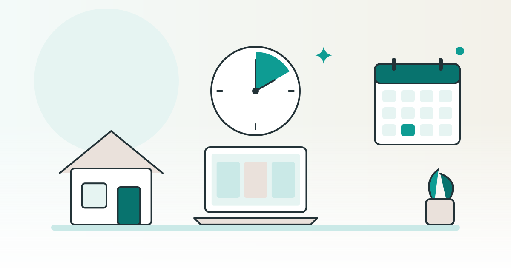

SHOPKIT コラム
スキマ時間でできる在宅の副業の選び方1日の空き時間から考える

仕事や家事の合間に、家でできる副業を探している方へ。副業の名前から選ぶ前に、自分が1日・1週間でどれだけの時間を使えるかを確かめると、続けられる形が見えやすくなります。この記事では、総務省の調査で30代・40代の自由に使える時間を見たうえで、スキマ時間に向く作業と、本業と合わせた働く時間の考え方を整理します。
この記事は、完成品のネットショップを販売している SHOPKIT が書いています。
30代・40代が自由に使える時間は、平日と日曜日でどれくらいか
まず、同じ年代の人が1日のうちどれくらいの時間を自由に使っているかを見てみましょう。ここでは、総務省統計局の「令和3年社会生活基本調査」を使います。2021年10月に、全国の約9万1千世帯に住む10歳以上の人を対象に行われた調査で、結果の集計対象は約18万人です。
この調査は、1日の行動を20種類に分けて、3つにまとめています。睡眠や食事などの「1次活動」、仕事・家事・育児などの「2次活動」、そのどちらでもない、それぞれが自由に使える時間の活動である「3次活動」です。下の表は、3次活動の時間を男女・年齢別に並べたものです。
| 男女・年齢 | 平日の3次活動 | 日曜日の3次活動 | そのうち平日の休養・くつろぎ |
|---|---|---|---|
| 男性 30〜34歳 | 243分 | 443分 | 104分 |
| 男性 35〜39歳 | 243分 | 462分 | 103分 |
| 男性 40〜44歳 | 246分 | 484分 | 101分 |
| 男性 45〜49歳 | 245分 | 517分 | 98分 |
| 女性 30〜34歳 | 239分 | 359分 | 105分 |
| 女性 35〜39歳 | 220分 | 362分 | 98分 |
| 女性 40〜44歳 | 235分 | 378分 | 98分 |
| 女性 45〜49歳 | 263分 | 406分 | 108分 |
出典：総務省統計局「令和3年社会生活基本調査結果」生活時間に関する結果 主要統計表の第1-2表（平日）・第1-4表（日曜日）の総平均時間（2026年10月19日確認）
表の時間は「総平均時間」です。その行動をしなかった人も含めた、その年代の全員の平均を表します。働いている人もそうでない人も一緒に数えているので、会社員だけ、主婦だけの値ではありません。
表の8つの区分では、平日の3次活動は220分から263分の間でした。日曜日は359分から517分で、どの区分も平日より長くなっています。平日の内訳も男女と年代で違い、同じ表で見ると、男性の4つの区分では平日の仕事が489分から504分、女性の35〜39歳では平日の家事が149分、育児が94分でした。
ただし、3次活動の中には、休養・くつろぎ、テレビ・ラジオ・新聞・雑誌、通勤・通学以外の移動、病院での受診や療養なども入っています。平日の休養・くつろぎだけで、どの区分も98分から108分ありました。自由に使える時間のすべてを副業に回せるわけではない、と考えておきましょう。
なお、統計局の結果の要約によると、この調査で生活時間を記録したのは、新型コロナウイルス感染症の緊急事態宣言などが全国で解除された直後の時期でした。今の暮らし方とは違う所があるかもしれません。表の数字は目安にとどめ、自分の時間は次の節からの方法で書き出してみてください。
スキマ時間に向く作業と、まとまった時間が要る作業
予定と予定の間にできる細かい空き時間を、この記事では「スキマ時間（隙間時間）」と呼びます。空き時間には、10分・15分ほどのスキマ時間と、1〜2時間続けて使える時間があります。副業の作業も、スキマ時間で進められる物と、まとまった時間が無いと進みにくい物に分かれます。
分けるときは、「途中で止めても困らないか」と「相手の都合で時刻が決まらないか」の2点を見ると考えやすくなります。
| 作業の性質 | スキマ時間との相性 | 作業の例 |
|---|---|---|
| 途中で止めても、後から同じ所から続けられる | 向きやすい | 届いた連絡を読む、次にやることを書き出す、メモを整える |
| 一度始めると、終わるまで止めにくい | 向きにくい（まとまった時間に回す） | 文章や資料を一から作る、初めて使う道具の操作を覚える |
| 相手の都合で時刻が決まる | その時間帯を空けておく必要がある | 約束した時間の打ち合わせ、受付の締め切りに合わせた手続き |
| 期限までに返事や対応が要る | 毎日少しずつ確かめる時間が要る | 問い合わせへの返事、依頼主からの直しの依頼 |
この表は、作業の性質で分けた一般的な目安です。同じ副業でも、どの作業を自分が受け持つかで、合う時間の使い方は変わります。
スキマ時間に向かない作業があっても、その副業を候補から外す必要はありません。まとまった時間を取れる曜日に回すと決めておけば、細かい時間とまとまった時間の両方を使えます。パソコンの操作に慣れていない人は、操作を覚える時間を、作業の時間とは別に見ておくと安心です。
週に使える時間を、曜日と時間帯で先に決める
副業を選ぶ前に、週にどれだけの時間を、どの曜日のどの時間帯に使えるかを決めておきましょう。先に枠を決めておくと、その枠に収まる副業かどうかで候補を比べられます。
- 1週間の予定を書き出す
本業、通勤、家事、育児、介護など、毎週ある予定を曜日ごとに書きます。手帳でもスマートフォンのメモでもかまいません。
- 空いている時間帯に印を付ける
平日の朝や夜、休日の午前など、予定の入っていない時間帯に印を付けます。10分前後のスキマ時間と、1時間以上続けて使える時間は、色を分けておくと次の手順で使いやすくなります。
- 休む時間を先に外す
空いている時間の全部を副業に回すと、本業や家のことに響きかねません。睡眠と休養の時間を先に外し、残りを使える時間とします。
- 副業に使う時間を、量と時間帯で決める
たとえば「平日の夜に30分を3日、日曜日の午前に2時間」のように、時間の量と時間帯をセットで書きます。スキマ時間で進める作業と、まとまった時間で進める作業も、ここで振り分けます。
- 2〜4週間試して、見直す
決めた枠で実際に作業してみて、足りなかった作業や、無理のあった曜日を書き出します。本業の忙しい時期や家族の予定に合わせて、枠は変えてかまいません。
「週1日だけ」と決める方法もあります。週1日にまとめて進められる作業なら、その日に集中して取り組めます。一方で、問い合わせへの返事や期限のある作業のように、日をまたいで対応が要る物は、週1日だけでは間に合わないことがあります。週1日で進めたい人は、候補の仕事に毎日の対応が要るかを先に確かめておきましょう。
最初の節の表では、平日と日曜日で自由に使える時間の長さが大きく違いました。自分の書き出した予定でも、平日はスキマ時間、休日はまとまった時間、という形になっていないか見てみてください。
本業と合わせた働く時間は、勤め先のルールから確かめる
会社員が副業をするときは、本業の時間と合わせて、働く時間が長くなりすぎないかも考えておく必要があります。厚生労働省は「副業・兼業の促進に関するガイドライン」（2022年7月改定）で、企業と働く人のそれぞれが気をつけることをまとめています。
ガイドラインでは、副業を考える人は、まず勤め先の副業・兼業についてのルール（労働契約や就業規則など）を確かめ、そのルールに合う仕事の中身と時間の働き方を選ぶ必要がある、としています。
働く時間の数え方は、働き方の形によって変わります。ほかの会社にも雇われて働く場合は、労働基準法により、本業と副業の働く時間を合わせて数える（通算する）ことがあります。雇われる場合でも、仕事の種類や立場によっては通算されないことがあります。一方、フリーランスや起業のように労働基準法が当てはまらない働き方では、その時間は通算されない、とガイドラインは説明しています。ただしその場合でも、勤め先が本人からの申告などで働く時間を把握し、長くなりすぎないよう配慮することが望ましい、とされています。
さらにガイドラインは、働く人自身も、それぞれの仕事の量や進み具合、かけた時間、体の調子を自分で管理する必要がある、としています。始めた時刻・終えた時刻などの記録をつける道具を使う方法も挙げられています。前の節で決めた週の枠は、この記録の土台にもなります。
出典：厚生労働省「副業・兼業の促進に関するガイドライン」（令和4年7月改定）の「労働時間管理」と「労働者の対応」の項（2026年10月19日確認）
自分の場合が通算の対象になるか、勤め先にどう伝えるかは、働き方や勤め先の決まりによって違います。厚生労働省の「副業・兼業」のページには、ガイドラインのほかにQ&Aやパンフレットもまとまっています。目を通したうえで、勤め先の人事の窓口などで確かめてください。
時間を自分で決めやすいかは、副業の形で変わる
在宅でできる副業は、大きく「雇われて働く」「頼まれて作業をする」「自分で売る」に分けられます。時間の面から見ると、誰が時刻や期限を決めるかが、形ごとに違います。
| 形 | 時刻や期限を決めるのは | スキマ時間との合わせ方 | 先に確かめること |
|---|---|---|---|
| 雇われて働く（在宅のパート・アルバイトなど） | 主に雇い主。働く時間帯が決まっている場合がある | 決まった時間帯を空けておく形になりやすい | 働く時間帯の決まり方、本業と合わせた働く時間（前の節） |
| 頼まれて作業をする（文章や画像などを納める） | 期限は依頼主と決める。作業する時刻は自分で選べる場合がある | 期限から逆に数えて、スキマ時間とまとまった時間に振り分ける | 期限、直しの受け方、返事の速さの目安 |
| 自分で売る（ネットショップなど） | 準備の時刻は自分で決められる。注文や問い合わせは、お客様の都合で届く | 準備はまとまった時間に、確認や返事はスキマ時間に回す | 返事の目安の示し方、発送の手順、休む日の伝え方 |
どの形でも、全部の時間を自由に決められるわけではありません。「時間の自由が利く」と言われる副業でも、相手がいる作業には相手の都合が入ります。候補を見つけたら、自分で時刻を決められる作業と、相手に合わせる作業を分けて書き出し、前の節で決めた週の枠に収まるかを確かめてみてください。
関連：時間と場所を選ばない仕事・事業とは｜続けやすい条件と選び方
時間と場所を選ばずに営めるネットショップの場合
ネットショップは、前の表の「自分で売る」形の1つです。お店の画面や商品を用意する作業と、注文が入った後の作業に分けて考えると、時間の使い方を組み立てやすくなります。
お店を一から作る場合は、商品選び、写真や説明文、お店の見た目づくりなど、販売を始める前の準備に時間をかけることになります。販売を始めた後は、注文の確認、発送の手配、問い合わせへの返事など、日々確かめる作業が続きます。どちらにどれくらいの時間がかかるかは、扱う商品やお店の形によって違います。
SHOPKIT は、完成品のネットショップを販売するサービスです。2026年10月15日時点のサービスページでは、副業でも営めること、時間と場所を選ばないので融通が利くことを、よくある質問で案内しています。お渡しする物は、お店一式（デザイン済みのネットショップ・ブランド名とロゴ・オーナー権）、仕入れの情報（商品ごとの仕入れ先・全商品の仕入れ値の一覧など）、運営マニュアル（管理画面の使い方・注文から発送までの手順など）、集客マニュアルです。お店づくりの段階を飛ばして、販売から始める形です。
ただし、販売を始めた後の作業に1日どれくらいの時間がかかるかは、サービスページには載っていません。オンライン相談では、お店ごとの商品原価と商品一覧を見られます。そのときに、注文から発送までの作業の流れと、どの作業がどの時間帯に起きるかを聞き、この記事の手順で書き出した週の枠と照らしてみてください。
販売中のお店はお店の一覧で、お渡しする物の中身はお渡しするものの欄で見られます。料金は料金の欄に載っています。
よくある質問
スキマ時間だけで、在宅の副業を続けることはできますか？
途中で止めて後から続けられる作業なら、細かい空き時間でも進められます。一方で、一度始めると止めにくい作業や、相手の都合で時刻が決まる作業は、まとまった時間や決まった時間帯を別に取る必要があります。まず1週間の予定を書き出し、細かい時間とまとまった時間がどれだけあるかを確かめてみてください。
週1日だけでも、在宅の副業はできますか？
週1日にまとめて進められる作業なら、その日に取り組む形にできます。ただし、問い合わせへの返事や期限のある作業のように、日をまたいで対応が要る仕事では、週1日だけでは間に合わないことがあります。候補の仕事に毎日の対応が要るかを、先に確かめておきましょう。
会社員が副業をするとき、本業と合わせた働く時間はどう考えればよいですか？
厚生労働省のガイドラインでは、まず勤め先の副業・兼業のルールを確かめることが挙げられています。ほかの会社にも雇われて働く場合は、本業と副業の働く時間を合わせて数えることがあります。自分の場合の扱いは、勤め先の窓口で確かめてください。
※ この記事の SHOPKIT のお渡しするもの・案内は、2026年10月15日時点のサービスページの記載です。生活時間の数字は令和3年社会生活基本調査（2021年10月）の結果で、公的資料は2026年10月19日〜20日に確認した内容です。働く時間や就業規則の個別の当てはめは、勤め先の窓口や各省庁の相談窓口でご確認ください。